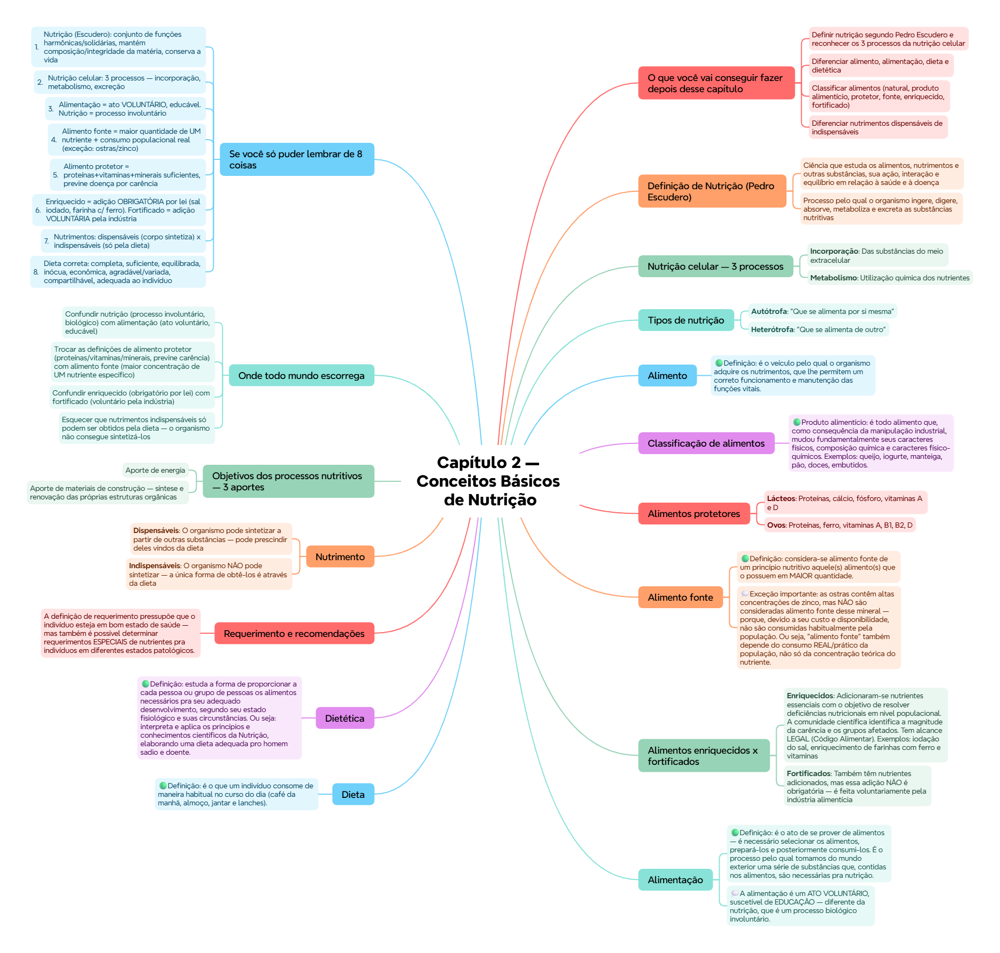

Diferenciar nutrimentos dispensáveis de indispensáveis
Reconhecer as características de uma dieta correta/recomendável
Descrever o conceito de plano de alimentação segundo Escudero
🔬 Definição de Nutrição (Pedro Escudero)
🟢 Definição clássica: "É o resultado ou resultante de um conjunto de funções harmônicas e solidárias entre si, que têm como finalidade manter a composição e integridade normal da matéria e conservar a vida."
Nutrição como ciência — 3 aspectos:
Ciência que estuda os alimentos, nutrimentos e outras substâncias, sua ação, interação e equilíbrio em relação à saúde e à doença
Processo pelo qual o organismo ingere, digere, absorve, metaboliza e excreta as substâncias nutritivas
Estuda também os aspectos sociais, culturais, econômicos e psicológicos dos alimentos e da alimentação
Definição funcional: processo que inclui um conjunto de funções cuja finalidade primária é prover ao organismo energia e nutrientes necessários pra manter a vida, promover o crescimento e repor as perdas.
🧬 Nutrição celular — 3 processos
Processo
Descrição
Incorporação
Das substâncias do meio extracelular
Metabolismo
Utilização química dos nutrientes
Excreção
Expulsão ao meio externo dos produtos de resíduo
📌 São exatamente 3 processos — a prova gosta de acrescentar um 4º item falso (como "transporte") como distrator numa questão "exceto".
⚖️ Tipos de nutrição
Tipo
Significado
Autótrofa
"Que se alimenta por si mesma"
Heterótrofa
"Que se alimenta de outro"
Classificação baseada no tipo de nutrientes que as células incorporam.
🍎 Alimento
🟢 Definição: é o veículo pelo qual o organismo adquire os nutrimentos, que lhe permitem um correto funcionamento e manutenção das funções vitais.
📋 Classificação de alimentos
Classificação natural: os alimentos se classificam de acordo com o tipo de nutrimentos que contêm e sua origem — espécies vegetais (fungos, algas, sementes maduras) e espécies animais (leite humano, leite de outras espécies).
🟢 Produto alimentício: é todo alimento que, como consequência da manipulação industrial, mudou fundamentalmente seus caracteres físicos, composição química e caracteres físico-químicos. Exemplos: queijo, iogurte, manteiga, pão, doces, embutidos.
🛡️ Alimentos protetores
🟢 Definição: aqueles que, pela quantidade e qualidade de proteínas, vitaminas e minerais que contêm, ao serem incorporados na dieta em quantidades suficientes, protegem o organismo de uma doença por carência.
Alimento
Principais nutrientes
Lácteos
Proteínas, cálcio, fósforo, vitaminas A e D
Ovos
Proteínas, ferro, vitaminas A, B1, B2, D
Carnes
Proteínas, ferro, vitaminas do complexo B
Hortaliças
Vitaminas e minerais
Frutas
Vitaminas e minerais
Legumes
Proteínas, ferro, vitaminas e minerais
Cereais integrais
Vitaminas do complexo B
🎯 Alimento fonte
🟢 Definição: considera-se alimento fonte de um princípio nutritivo aquele(s) alimento(s) que o possuem em MAIOR quantidade.
Exemplos: lácteos = fonte de cálcio. Carnes = fonte de ferro.
💭 Exceção importante: as ostras contêm altas concentrações de zinco, mas NÃO são consideradas alimento fonte desse mineral — porque, devido a seu custo e disponibilidade, não são consumidas habitualmente pela população. Ou seja, "alimento fonte" também depende do consumo REAL/prático da população, não só da concentração teórica do nutriente.
➕ Alimentos enriquecidos x fortificados
Tipo
Definição
Enriquecidos
Adicionaram-se nutrientes essenciais com o objetivo de resolver deficiências nutricionais em nível populacional. A comunidade científica identifica a magnitude da carência e os grupos afetados. Tem alcance LEGAL (Código Alimentar). Exemplos: iodação do sal, enriquecimento de farinhas com ferro e vitaminas
Fortificados
Também têm nutrientes adicionados, mas essa adição NÃO é obrigatória — é feita voluntariamente pela indústria alimentícia
📌 A diferença-chave: enriquecido = obrigatório por lei (política de saúde pública). Fortificado = voluntário pela indústria.
🍽️ Alimentação
🟢 Definição: é o ato de se prover de alimentos — é necessário selecionar os alimentos, prepará-los e posteriormente consumi-los. É o processo pelo qual tomamos do mundo exterior uma série de substâncias que, contidas nos alimentos, são necessárias pra nutrição.
💭 A alimentação é um ATO VOLUNTÁRIO, suscetível de EDUCAÇÃO — diferente da nutrição, que é um processo biológico involuntário.
5 características que o processo de alimentação deve cumprir: Adequada, Acessível, Variada, Suficiente, Inócua.
📅 Dieta
🟢 Definição: é o que um indivíduo consome de maneira habitual no curso do dia (café da manhã, almoço, jantar e lanches).
📐 Dietética
🟢 Definição: estuda a forma de proporcionar a cada pessoa ou grupo de pessoas os alimentos necessários pra seu adequado desenvolvimento, segundo seu estado fisiológico e suas circunstâncias. Ou seja: interpreta e aplica os princípios e conhecimentos científicos da Nutrição, elaborando uma dieta adequada pro homem sadio e doente.
📊 Requerimento e recomendações
A definição de requerimento pressupõe que o indivíduo esteja em bom estado de saúde — mas também é possível determinar requerimentos ESPECIAIS de nutrientes pra indivíduos em diferentes estados patológicos.
Requerimentos e recomendações variam de acordo com: peso corporal, altura, idade e sexo do indivíduo. Calculam-se com base numa atividade física MODERADA. Podem se expressar em quantidade absoluta diária, ou em determinada quantidade do nutriente por quilograma de peso, por dia.
⚛️ Nutrimento
🟢 Definição: é a unidade funcional mínima que a célula utiliza pro metabolismo intermediário, provida através da alimentação. Fornece energia, forma estruturas e participa de reações químicas específicas.
São substâncias normais do nosso organismo e dos alimentos, cuja ausência ou diminuição abaixo de um limite mínimo produz, ao cabo de certo tempo, uma doença por carência.
Classificação
Definição
Dispensáveis
O organismo pode sintetizar a partir de outras substâncias — pode prescindir deles vindos da dieta
Indispensáveis
O organismo NÃO pode sintetizar — a única forma de obtê-los é através da dieta
🎯 Objetivos dos processos nutritivos — 3 aportes
Aporte de energia
Aporte de materiais de construção — síntese e renovação das próprias estruturas orgânicas
Aporte de reguladores — substâncias necessárias pra regulação dos processos químicos
✅ Dieta correta ou recomendável — 8 características
Característica
Significado
Integridade
Ser completa
Quantidade
Ser suficiente
Equilíbrio
Ser equilibrada
Segurança
Ser inócua
Acessibilidade
Ser econômica
Atração sensorial
Ser agradável e variada
Valor social
Ser compartilhável com o grupo ao qual se pertence
Congruência integral
Ser adequada às características e circunstâncias do indivíduo
💡 Repare a semelhança com as 4 Leis da Alimentação do Cap. 1 (suficiente, completa, harmônica, adequada) — aqui a dietética expande esses conceitos com mais 4 características práticas (segurança, acessibilidade, atração sensorial, valor social).
📋 Plano de alimentação (Escudero)
🟢 Definição: Escudero o definiu como "aquele que permite ao indivíduo perpetuar através de várias gerações os caracteres biológicos do indivíduo e da espécie".
O que um bom plano de alimentação permite:
Manter constante a composição dos tecidos
Permitir o funcionamento de aparelhos e sistemas
Assegurar a reprodução e manter a gravidez
Favorecer a lactância
Assegurar uma sensação de bem-estar que impulsione à atividade
✅ O que você deve lembrar
Nutrição = processo involuntário. Alimentação = ato voluntário/educável. Alimento fonte = maior quantidade DO nutriente E consumido habitualmente pela população. Enriquecido = obrigatório por lei. Fortificado = voluntário pela indústria.
⚠️ Erro comum
Confundir alimento "fonte" com alimento "protetor" — fonte é sobre MAIOR concentração de um nutriente específico (ex: carnes=ferro); protetor é sobre a combinação de proteínas/vitaminas/minerais que previne doenças por carência de forma mais ampla.
⚡ Questão rápida
Por que as ostras, apesar de terem altas concentrações de zinco, não são consideradas "alimento fonte" desse mineral?
Porque, apesar da alta concentração teórica de zinco, as ostras não são consumidas habitualmente pela população devido a seu custo elevado e disponibilidade limitada. O conceito de "alimento fonte" não depende só da concentração do nutriente no alimento, mas também do padrão REAL de consumo da população — um alimento raramente consumido, mesmo rico num nutriente, não contribui de forma prática/populacional pra esse aporte nutricional.
🧠 Autoexplicação
Por que faz sentido que a alimentação seja descrita como um ato "voluntário e suscetível de educação", enquanto a nutrição é um processo biológico involuntário?
A nutrição, como processo biológico celular (incorporação, metabolismo, excreção), ocorre automaticamente no corpo assim que os nutrientes estão disponíveis — as células não "escolhem" se vão metabolizar a glicose ou não, isso acontece por vias bioquímicas involuntárias. Já a ALIMENTAÇÃO é a etapa ANTERIOR a esse processo biológico: envolve a seleção CONSCIENTE dos alimentos, seu preparo e o ato deliberado de consumi-los — decisões que passam pelo comportamento humano, influenciadas por cultura, educação, disponibilidade econômica e escolhas pessoais. É exatamente por ser uma etapa comportamental voluntária que a alimentação é "suscetível de educação": podemos ensinar às pessoas a fazer escolhas alimentares melhores, mudar hábitos, e influenciar essas decisões conscientes — algo que não seria possível fazer diretamente sobre os processos metabólicos celulares involuntários da nutrição em si. Essa distinção é fundamental para entender por que a educação nutricional (mudança de comportamento alimentar) é uma estratégia de saúde pública tão central: ela atua exatamente na etapa VOLUNTÁRIA do processo, onde a intervenção humana é possível.
⚠️ Onde todo mundo escorrega
Confundir nutrição (processo involuntário, biológico) com alimentação (ato voluntário, educável)
Trocar as definições de alimento protetor (proteínas/vitaminas/minerais, previne carência) com alimento fonte (maior concentração de UM nutriente específico)
Confundir enriquecido (obrigatório por lei) com fortificado (voluntário pela indústria)
Esquecer que nutrimentos indispensáveis só podem ser obtidos pela dieta — o organismo não consegue sintetizá-los
Confundir os 3 processos da nutrição celular (incorporação, metabolismo, excreção) — não incluem "transporte" como processo separado
📚 Se você só puder lembrar de 8 coisas
Nutrição (Escudero): conjunto de funções harmônicas/solidárias, mantém composição/integridade da matéria, conserva a vida
Alimentação = ato VOLUNTÁRIO, educável. Nutrição = processo involuntário
Alimento fonte = maior quantidade de UM nutriente + consumo populacional real (exceção: ostras/zinco)
Alimento protetor = proteínas+vitaminas+minerais suficientes, previne doença por carência
Enriquecido = adição OBRIGATÓRIA por lei (sal iodado, farinha c/ ferro). Fortificado = adição VOLUNTÁRIA pela indústria
Nutrimentos: dispensáveis (corpo sintetiza) x indispensáveis (só pela dieta)
Dieta correta: completa, suficiente, equilibrada, inócua, econômica, agradável/variada, compartilhável, adequada ao indivíduo
🩺 Caso Clínico Progressivo — Comunidade com Deficiência Nutricional Populacional
Vamos acompanhar uma nutricionista de saúde pública avaliando altos índices de anemia numa comunidade rural. O caso evolui em 3 níveis — clica em cada um pra ver como as coisas vão se desenrolando.
🧠 Mapa Mental — Conceitos Básicos de Nutrição
Visão geral do capítulo em formato visual — ideal pra revisão rápida antes da prova. O conteúdo completo, com explicações e exemplos, está no Guia de Estudo.

🃏 Flashcards — SM-2 real + interface Anki
O sistema guarda, no seu navegador, quais cards você já sabe bem e quais precisam voltar mais cedo — cada vez que você avalia um card, ele recalcula quando ele deve voltar.
Cartão 1 / 0Dominados: 0
PERGUNTA
RESPOSTA
✅ Banco de Questões Comentadas
10 questões, do mais básico ao mais puxado. Escolhe uma alternativa, depois clica em "Ver comentário completo" — vale a pena ler até quando você acerta, porque o comentário explica cada alternativa, não só a certa.